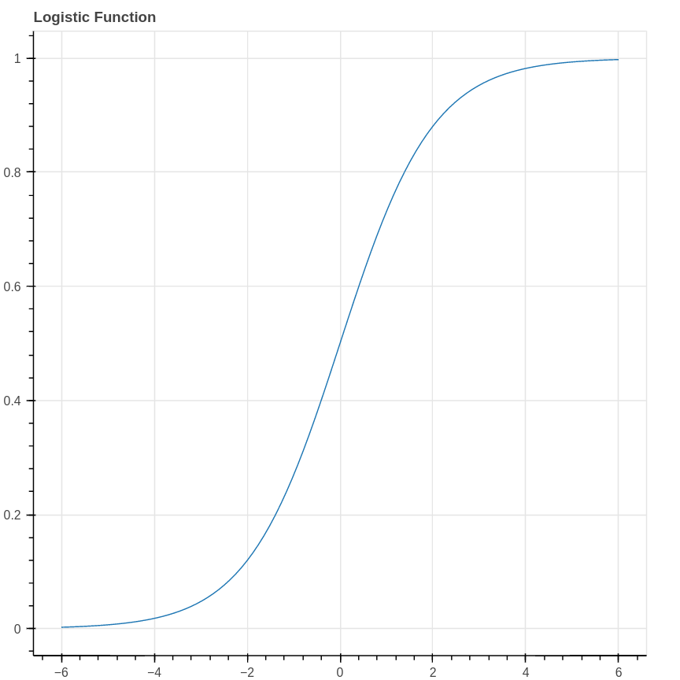
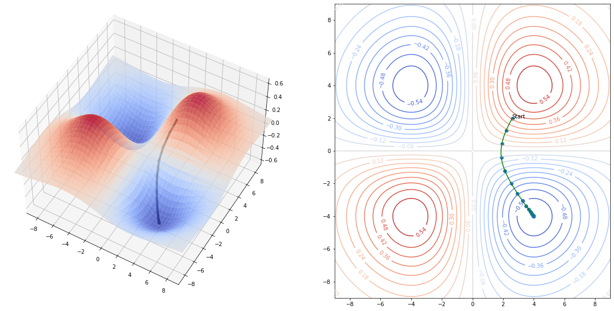
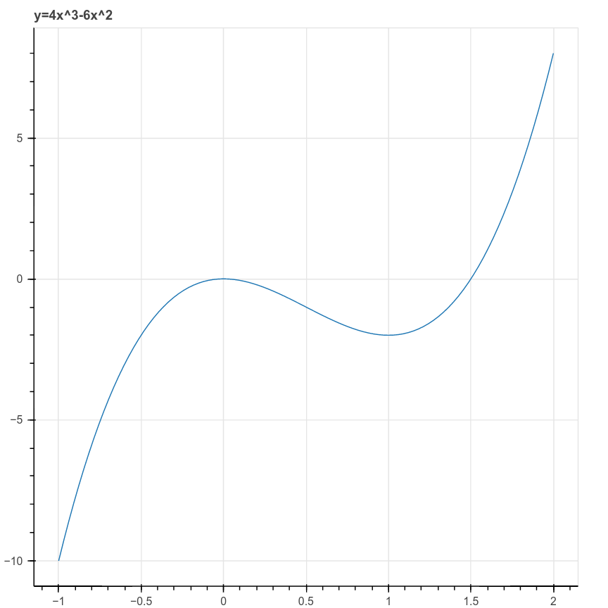
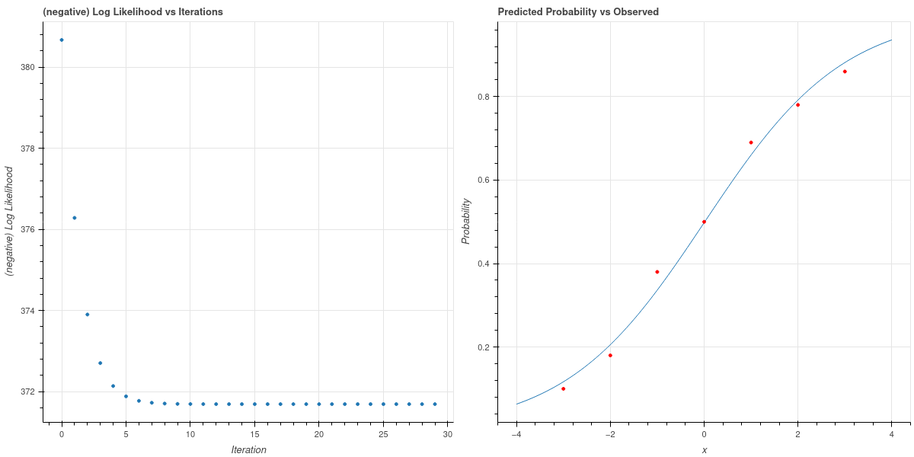
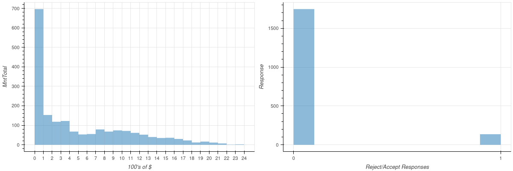
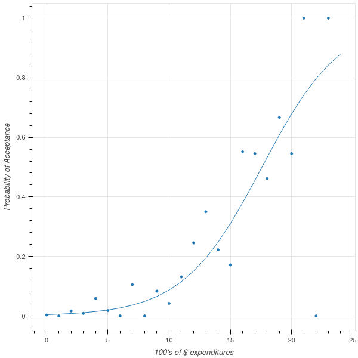
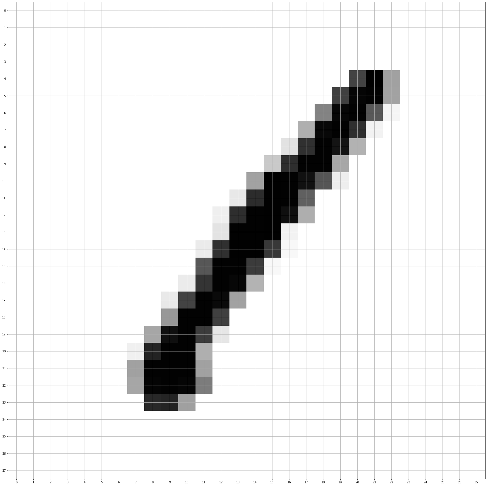
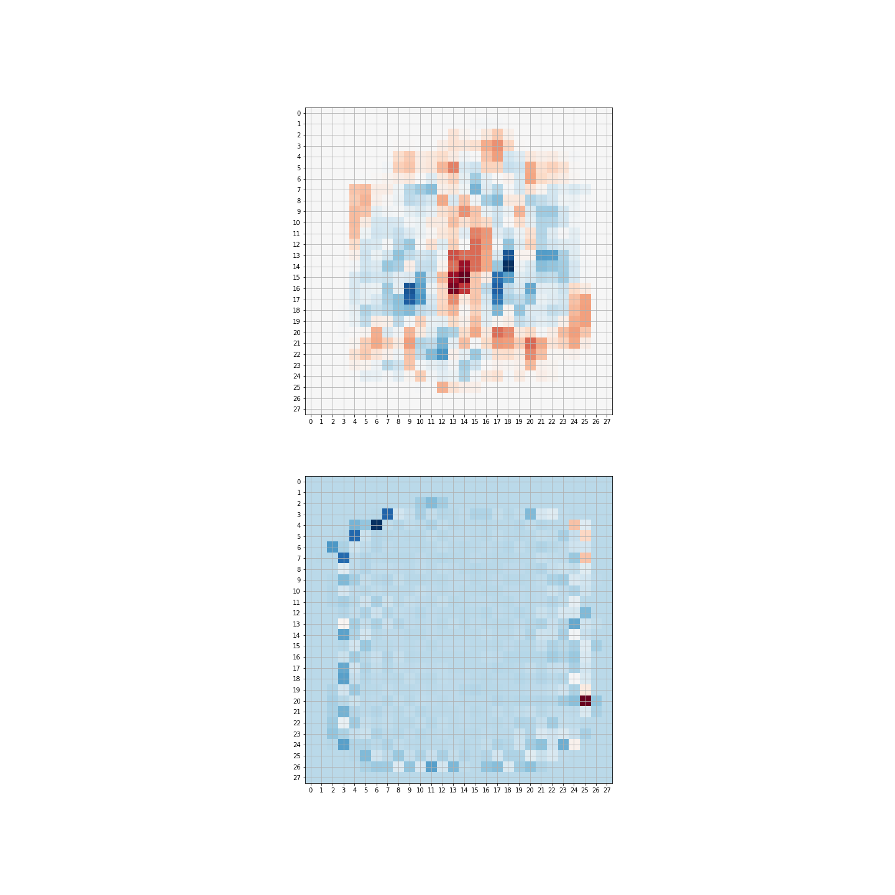

5 Logistic Regression
Suppose that we are trying to convince customers to buy our product by showing them advertising. Our experience teaches us that there is no deterministic relationship between how often a potential customer sees one of our ads and whether or not they purchase our product, nevertheless it is the case that as they see more ads they become more likely to make a purchase. Logistic regression is a statistical model that can capture the essence of this idea.
To make this problem more abstract, let’s imagine that we are trying to model a random event that depends on a parameter. As in our introduction above, the random event might be a user deciding to make a purchase from a website, which, in our very simple model, depends on how many times the user saw an advertisement for the product in question. But we could imagine other situations where the chance of an event happening depends on a parameter. For example, we could imagine that a student’s score on a certain test depends on how much studying they do, with the likelihood of passing the test increasing with the amount of studying.
To construct this model, we assume that the probability of a certain event \(p\) is related to some parameter \(x\) by the following relationship:
\[ \log\frac{p}{1-p} = ax+b \tag{5.1}\]
where \(a\) and \(b\) are constants. The quantity \(\frac{p}{1-p}\) is the “odds” of the event occurring. We often use this quantity colloquially; if the chance of our team winning a football game is \(1\) in \(3\), then we would say the odds of a win are \(1\)-to-\(2\), which we can interpret as meaning they are twice as likely to lose as to win. The quantity \(\log\frac{p}{1-p}\) is, for obvious reasons, called the log-odds of the event.
The assumption in Equation 5.1 can be written \[ \frac{p}{1-p} = e^{ax+b} \] and we interpret this as telling us that if the parameter \(x\) increases by \(1\), the odds of our event happening go up by a factor of \(e^{a}\). So, to be even more concrete, if \(a=\log 2\), then our logistic model would say that an increase of \(1\) in our parameter \(x\) doubles the odds of our event taking place.
In terms of the probability \(p\), Equation 5.1 can be rewritten \[ p = \frac{1}{1+e^{-ax-b}} \] This proposed relationship between the probability \(p\) and the parameter \(x\) is called the logistic model. The function \[ \sigma(x) = \frac{1}{1+e^{-x}} \] is called the logistic function and yields an S-shaped curve.

To fully put the logistic model in perspective, let’s choose some explicit parameters and look at what data arising from such a model would look like. Imagine therefore that \(a=\log 2\) and \(b=0\), so that the probability of the event we are interested occurring is given by the formula \[ p(x) = \frac{1}{1+e^{-(\log 2)x}} = \frac{1}{1+(.5)^x}. \] Our data consists of counts of how often our event happened for a range of values of \(x\). To generate this data, we can pick \(x\) values from the set \(\{-3,-2,-1,0,1,2,3\}\) yielding probabilities \(\{.11,.2,.33,.4,.56,.67,.8\}\). Now our data consists of, for each value of \(x\), the result of \(100\) independent Bernoulli trials with probability \(p(x)\). For example, we might find that our event occurred \(\{10, 18, 38, 50, 69, 78, 86\}\) times respectively for each of the \(x\) values.
5.1 Likelihood and Logistic Regression
In applications, our goal is to choose the parameters of a logistic model to accurately predict the likelihood of the event under study occurring as a function of the measured parameter. Let’s imagine that we collected the data that we generated above, without knowing that it’s source was a logistic model. So Table 5.1 shows the number of times the event occurred, for each of the measured values of the \(x\) parameter.
| \(x\) | -3 | -2 | -1 | 0 | 1 | 2 | 3 |
|---|---|---|---|---|---|---|---|
| Occurrences (out of 100) | 10 | 18 | 38 | 50 | 69 | 78 | 86 |
Our objective now is to find a logistic model which best explains this data. Concretely, we need to estimate the coefficients \(a\) and \(b\) that yield \[ p(x) = \frac{1}{1+e^{-ax-b}} \tag{5.2}\]
where the resulting probabilities best estimate the data. As we have seen, this notion of “best” can have different interpretations. For example, we could approach this from a Bayesian point of view, adopt a prior distribution on the parameters \(a\) and \(b\), and use the data to obtain this prior and obtain a posterior distribution on \(a\) and \(b\). For this first look at logistic regression, we will instead adopt a “maximum likelihood” notion of “best” and ask what is the most likely choice of \(a\) and \(b\) to yield this data.
To apply the maximum likelihood approach, we need to ask “for (fixed, but unknown) values of \(a\) and \(b\), what is the likelihood that a logistic model with those parameters would yield the data we have collected?” Each column in Table 5.1 represents \(100\) Bernoulli trials with a fixed probability \(p(x)\). So, for example, the chance \(q\) of obtaining \(10\) positive results with \(x=-3\) is given by \[ q(-3)=C p(-3)^{10}(1-p(-3))^{90} \] where \(C\) is a constant (it would be a binomial coefficient). Combining this for different values of \(x\), we see that the likelihood of the data is the product \[ L(a,b) = C' p(-3)^{10}(1-p(-3))^{90}p(-2)^{18}(1-p(-2))^{82}\cdots p(3)^{86}(1-p(3))^{14} \] where \(C'\) is another constant. Each \(p(x)\) is a function of the parameters \(a\) and \(b\), so all together this is a function of those two parameters. Our goal is to maximize it.
One step that simplifies matters is to consider the logarithm of the likelihood: \[ \log L (a,b)= \sum_{i=0}^{6} \left[ x_{i}\log(p(x_{i})) + (100-x_{i})\log(1-p(x_{i}))\right] +C'' \] where \(C''\) is yet another constant. Since our ultimate goal is to maximize this, the value of \(C''\) is irrelevant and we can drop it.
5.1.1 Another point of view on logistic regression
In Table 5.1 we summarize the results of our experiments in groups by the value of the \(x\) parameter. We can think of the data somewhat differently, by instead considering each event separately, corresponding to a parameter value \(x\) and an outcome \(0\) or \(1\). From this point of view the data summarized in Table 5.1 would correspond to a vector with \(700\) rows. The first \(100\) rows (corresponding to the first column of the table) would have first entry \(-3\), the next \(100\) would have \(-2\), or so on. So our parameter values form a vector \(X\). Meanwhile, the outcomes form a vector \(Y\) with entries \(0\) or \(1\).
More generally, imagine we are studying our advertising data and, for each potential customer, we record how many times they saw our ad. We create a vector \(X\) whose entries are these numbers. Then we create another vector \(Y\), of the same length, whose entries are either \(0\) or \(1\) depending of whether or not the customer purchased our product.
One way to think about logistic regression in this setting is that we are trying to fit a function that, given the value \(x_i\), tries to yield the corresponding value \(y_i\). However, instead of finding a deterministic function, as we did in linear regression, instead we try to fit a logistic function that captures the likelihood that the \(y\)-value is a \(1\) given the \(x\)-value. This “curve-fitting perspective” is why this is considered a regression problem.
If, as above, we think of each row of the matrix as an independent trial, then the chance that \(y_i=1\) is \(p(x_i)\) and the chance that \(y_i=0\) is \(1-p(x_i)\), where \(p(x)\) is given by the logistic function as in Equation 5.2. The likelihood of the results we obtained is therefore: \[ L(a,b) = C \prod_{i=0}^{N-1} p(x_i)^{y_i}(1-p(x_i))^{(1-y_i)} \] where \(C\) is a constant and we are exploiting the trick that, since \(y_i\) is either zero or one, \(1-y_i\) is correspondingly one or zero. Thus only \(p(x_i)\) or \(1-p(x_i)\) occurs in each term of the product. If we group the terms according to \(x_i\) we obtain our earlier formula for \(L(a,b)\).
This expresssion yields an apparently similar formula for the log-likelihood (up to an irrelevant constant): \[ \log L(X,a,b) = \sum_{i=0}^{N-1} y_i\log p(x_i) + (1-y_i)\log (1-p(x_i)). \] Using vector notation, this can be further simplified, where again we drop irrelevant constants: \[ \log L(X,a,b) = Y\cdot\log p(X) + (1-Y)\cdot \log(1-p(X)). \] To be absolutely concrete, in this formula, \(p(X)\) is a vector \[ p(X)=[p(x_i)]_{i=0}^{N-1} = \left[\frac{1}{1+e^{-ax_i-b}} \right]_{i=0}^{N-1} \] so its entries are functions of the unknown parameters \(a\) and \(b\).
We might naively try to maximize this by taking the derivatives with respect to \(a\) and \(b\) and setting them to zero, but this turns out to be impractical. So we need a different approach to finding the parameters \(a\) and \(b\) which maximize this likelihood function. We will return to this problem later, but before we do so we will look at some generalizations and broader applications of the logistic model.
5.1.2 Logistic regression with multiple features
The next generalization we can consider of the logistic model is the situation where the log-odds of our event of interest depend linearly on multiple parameters. In other words, we have \[ \log\frac{p}{1-p} = m_0 x_0 + m_1 x _1 + \cdots + m_{k-1} x_{k-1} + b \] where the \(a_i\) and \(b\) are constants. Under this model, notice that the incremental effects of changes to the different parameters \(x_i\) have independent effects on the probability. So, for example, if \(x_1\) were the number of times our potential customer saw an online advertisement and \(x_2\) were the number of times they saw a print advertisement, by adopting this model we are assuming that the impact of seeing more online ads is completely unrelated to the impact of seeing more print ads.
The probability is again given by a sigmoid function \[ p(x_1,\ldots, x_k) = \frac{1}{1+e^{-\sum_{i=0}^{k-1} m_i x_i +b}} \]
This model has an \(N\times k\) feature matrix whose rows are the values \(x_0,\ldots, x_{k-1}\) for each sample. The outcome of our experimemt is recorded in an \(N\times 1\) column vector \(Y\) whose entries are \(0\) or \(1\). The likelihood function is formally equivalent to what we computed in the case of a single feature, but it will be useful to be a bit careful about vector notation.
Following the same pattern we adopted for linear regression, let \(X\) be the \(N\times (k+1)\) matrix whose first \(k\) columns contain the values \(x_i\) for each sample, and whose last column is all \(1\). Rename the “intercept” variable as \(a_{k+1}\) and organize these parameters into a \((k+1)\times 1\) matrix \(M\). Then \[ p(X)=\sigma(XM) \] and our likelihood becomes \[ \log L(M) = Y\cdot \log\sigma(XM) + (1-Y)\cdot(1-\log\sigma(XM)). \tag{5.3}\]
5.2 Finding the maximum likelihood solution by gradient descent
Given a set of features \(X\) and targets \(Y\) for a logistic model, we now want to find the values \(M\) so that the log-likelihood of the model for those paramters, given the data, is maximized. While in linear regression we could find a nice closed form solution to this problem, the presence of the non-linear function \(\sigma(x)\) in the likelihood makes that impossible for logistic regression. Thus we need to use a numerical approximation. The most straightforward such method is called gradient descent. It is at the foundation of many numerical optimization algorithms, and so while we will develop it here for logistic regression we will have other opportunities to apply it and we will discuss it more thoroughly on its own later.
5.2.1 Gradient descent
Suppose that we have a function \(f(x_0,\ldots, x_{k-1})\) and we wish to find its minimum value. To apply gradient descent, we choose an initial starting point \(c=(c_0,\ldots, c_{k-1})\) and we iteratively adjust the values of \(c\) so that the values \(f(c)\) decrease. When we can no longer do that, we’ve found what is at least a local minimum of \(f\).
How should we make these adjustments? Let us remember the idea of the directional derivative from multivariate calculus. The directional derivative \(D_{v}f\) measures the rate of change of \(f\) as one moves with velocity vector \(v\) from the point \(x\) and it is defined as \[ D_{v}f(x) = \frac{d}{dt}f(x+tv)|_{t=0} \] From the chain rule, we can compute that \[ D_{v}f(x) = \sum_{i=0}^{k-1} \frac{\partial f}{\partial x_{i}}\frac{dx_{i}}{dt} = (\nabla f)\cdot v \] where \[ \nabla f = \left[\frac{\partial f}{\partial x_{i}}\right]_{i=0}^{k-1} \] is the gradient of \(f\). This argument yields the following result.
Proposition: Let \(f(x_0,\ldots, x_{k-1})\) be a smooth function from \(\mathbb{R}^{k}\to\mathbb{R}\). Then for every point \(c=(c_0,\ldots, c_{k-1})\), if \(\nabla f\not=0\) then \(\nabla f\) is a vector pointing in the direction in which \(f\) increases most rapidly, and \(-\nabla f\) is a vector pointing in the direction in which \(f\) decreases most rapidly. If \(\nabla f = 0\), then \(c\) is a critical point of \(f\).
Proof: The directional derivative \(D_{v}(f)=(\nabla f)\cdot v\) measures the rate of change of \(f\) if we travel with velocity \(v\) from a point \(x\). To remove the dependence on the magnitude of \(v\) (since obviously \(f\) will change more quickly if we travel more quickly in a given direction), we scale \(v\) to be a unit vector. Then the dot product giving the rate is maximized when \(v\) is parallel to \(\nabla f\).
This observation about the gradient yields the algorithm for gradient descent.
Gradient Descent Algorithm: Given a function \(f:\mathbb{R}^{k}\to \mathbb{R}\), choose a point \(c^{(0)}\), a small constant \(\nu\) (called the learning rate) and a small constant \(\epsilon\) (the tolerance). Then iteratively compute \[ c^{(n+1)}=c^{(n)} -\nu\nabla f(c^{(n)}) \] until \(|c^{(n+1)}-c^{(n)}|<\epsilon\). Then \(c^{(n+1)}\) is an (approximate) critical point of \(f\).

The behavior of gradient descent is illustrated in Figure 5.2 for the function \[ f(x,y) = \frac{xy}{\sigma\sqrt{2\pi}}e^{(-x^2-y^2)/2\sigma^2} \] where \(\sigma=4\). This function has two “upward” humps and two “downward” humps. Starting on the inside slope of one of the upward humps, gradient descent finds the bottom of an adjacent “downward” hump.
To get a little more perspective on gradient descent, consider the one-dimensional case, with \(f(x)=4x^3-6x^2\). This is a cubic polynomial whose graph has a local maximum and a local minimum, depicted in Figure 5.3.

In this case the gradient is just the derivative \(f'(x)=12x^2-12x\) and the iteration is \[ c^{(n+1)} = c^{(n)}-12\nu((c^{(n)})^2-c^{(n)}). \]
Even from this simple example we can see the power and also the pitfalls of this method. Suppose we choose \(x_0=2\), \(\nu=.01\), and \(\epsilon=.001\). Then the iteration yields:
| Step | 0 | 1 | 2 | 3 | 4 | 5 | 6 |
|---|---|---|---|---|---|---|---|
| x | 2.0 | 0.8 | 0.896 | 0.952 | 0.979 | 0.991 | 0.997 |
As you can see, the points move quickly to the (local) minimum at \(x=1\).
There are two ways (at least) that things can go wrong, however. First suppose we use \(x_0=-1\), instead of \(x_0=2\), as our first guess. Then we are on the downslope on the left side of the graph, and following the gradient quickly takes us off to \(-\infty\).
| Step | 0 | 1 | 2 | 3 | 4 | 5 |
|---|---|---|---|---|---|---|
| x | -1.00 | -2.20 | -6.42 | -35.04 | -792.70 | -378296.27 |
Second, suppose we choose \(x_0=2\), but choose a somewhat larger learning rate – say, \(\nu=.1\). In this case, initially things look good, but the addition of the gradient causes an overshoot which once again takes us over the hump at \(x=0\) and off to \(-\infty\) heading to the left.
| Step | 0 | 1 | 2 | 3 | 4 | 5 | 6 |
|---|---|---|---|---|---|---|---|
| x | 2.00 | -0.11 | -0.24 | -0.56 | -1.49 | -5.42 | -42.23 |
Based on these considerations, we see that, for general functions, if gradient descent converges, then it will converge to a local minimum of the function. But it may not converge, and even if it does, we can’t conclude anything about whether we’ve reached a global minimum.
5.3 Gradient Descent and Logistic Regression
We can use gradient descent to find the maximum likelihood set of parameters for our logistic model. As we saw earlier, in Equation 5.3, we have the log likelihood function \[ \log L(M) = Y\cdot \log\sigma(XM) + (1-Y)\cdot\log(1-\sigma(XM)) \] where \(Y\) are the target \(0/1\) values, \(X\) is our \(N\times (k+1)\) data matrix whose last column is all ones, and \(M\) is the \(k+1\times 1\) column vector of unknown parameters. Since gradient descent is naturally a minimizing algorithm, we will minimize the function \(-L(M)\).
The key piece of information that we need is the gradient \(-\nabla L\), where the variables are the entries of \(M\). The complicating features is the presence of the nonlinear function \(\sigma\), so let’s start with a simple observation about this function.
Lemma: The logistic function \(\sigma(x)\) satisfies the differential equation \[ \frac{d\sigma}{dx} = \sigma(x)(1-\sigma(x)). \]
Proof: Since \[ \sigma(x)= \frac{1}{1+e^{-x}}, \] \[ 1-\sigma(x) = \frac{e^{-x}}{1+e^{-x}}. \] Then we calculate \[\begin{aligned} \frac{d\sigma}{dx}&=\left(\frac{1}{(1+e^{-x})}\right)^2e^{-x} \\ &= \left(\frac{1}{1+e^{-x}}\right)\left(\frac{e^{-x}}{1+e^{-x}}\right)\\ &=\sigma(x)(1-\sigma(x)) \\ \end{aligned} \] which is what we claimed.
We apply this differential equation to compute the gradient of \(L\).
Theorem 5.1 Proposition: The gradient \(-\nabla L(M)\) is given by \[ -\nabla \log L(M) = X^{\intercal}(\sigma(XM)-Y). \] Notice that the right side of this equation yields a \((k+1)\times 1\) column vector. The entries of this vector are the partial derivatives with respect to the coefficients \(m_{i}\) for \(i=0,\ldots, k\).
Proof: This is yet another exercise in the chain rule and keeping track of indices. Let’s first look at the term \(Y\cdot \log\sigma(XM)\). Writing it out, we have \[
Y\cdot \log\sigma(XM)=\sum_{i=0}^{N-1}y_{i}\log\sigma(\sum_{j=0}^{k}x_{ij}m_{j}).
\] Applying \(\partial/\partial m_{s}\) to this yields \[
\sum_{i=0}^{N-1}y_{i}(1-\sigma(\sum_{j=0}^{k}x_{ij}m_{j}))x_{is}
\] where we’ve used the chain rule and the differential equation for \(\sigma\) discussed above. At the same time, we can apply \(\partial/\partial m_{s}\) to the second term \((1-Y)\cdot\log(1-\sigma(XM))\) and obtain \[
-\sum_{i=0}^{N-1}(1-y_{i})\sigma(\sum_{j=0}^{k}x_{ij}m_{j})x_{is}.
\] The term \(\sum_{i=0}^{N-1} y_{i}\sigma(\sum_{j=0}^{k}x_{ij}m_{j})x_{is}\) cancels, yielding \[
\frac{\partial L(M)}{m_{s}} = -\sum_{i=0}^{N-1} (y_{i}-\sigma(\sum_{j=0}^{k}x_{ij}m_{j}))x_{is}.
\]
Since our weights \(M\) are naturally a \((k+1)\times 1\) column vector, looked at properly this is our desired formula: \[
-\nabla \log L(M) = X^{\intercal}(\sigma(XM)-Y).
\] Since the right side is an \((k+1)\times N\) matrix times an \(N\times 1\) column vector, the result is a \((k+1)\times 1\) column vector whose entries are the partial derivatives of \(-\log L(M)\) with respect to the weights \(m_{s}\).
5.3.1 Gradient Descent on our synthetic data
Now we can apply gradient descent to find a maximum likelihood logistic model for the sample data that we generated from the logistic model and reported in Table 5.1. With the probability given as \[ p(x) = \frac{1}{1+e^{-ax-b}} \] we make an initial guess of \(a=1\) and \(b=0\) set a learning rate \(\nu=.001\), and run the gradient descent algorithm for \(30\) iterations. We plot the negative log-likelihood for this algorithm one the left in Figure 5.4, where we see that it drops swiftly to a minimum value. The corresponding parameter values are \(a=.6717\) and \(b=-.0076\), and the fit of the the corresponding logistic curve to the observed data is shown on the right in Figure 5.4.

The parameters used to generate the data are close to this; they were \(a=log(2)=\).6931$ and \(b=0\).
5.3.2 Gradient Descent and Logistic Regression on “real” data
We conclude this first look at logistic regression and gradient descent by analyzing some simple real data. This dataset consists of about \(2200\) customers who patronize a certain food store. Among the features in the data set is a field giving the total dollars spent at the store by a customer; we will study that feature and its relationship to the question of whether or not the customer accepted a special offer from the store. (see [1] for the original data source).

The two plots in Figure 5.5 summarize the data. The first plot is a histogram showing the amounts spent by the customers; the second shows the distribution of responses.
We would like to know how expenditures increase the likelihood of customers accepting our offer. We therefore fit a logistic model to the data. The result is shown in Figure 5.6.

5.4 Logistic Regression and classification
Beyond the kind of probability prediction that we have discussed up to this point, logistic regression is one of the most powerful techniques for attacking the classification problem. Let’s start our discussion with a sample problem that is a simplified version of one of the most famous machine learning benchmark problems, the MNIST (Modified National Institute of Science and Technology) dataset of handwritten numerals. This dataset consists of \(60000\) labelled grayscale images of handwritten digits from \(0\) to \(9\). Each image is stored as a \(28x28\) array of integers from \(0\) to \(255\). Each cell of the array corresponds to a “pixel” in the image, and the contents of that cell is a grayscale value. See [2] for the a more detailed description of how the dataset was constructed.
In Figure 5.7 is a picture of a handwritten “1” from the MNIST dataset.

Classification Problem for MNIST: Given a \(28x28\) array of grayscale values, determine which digit is represented.
At first glance, this does not look like a logistic regression problem. To make the connection clearer, let’s simplify the problem and imagine that our database contains only labelled images of zeros and ones – we’ll worry about how to handle the full problem later. So now our task is to determine which images are zeros, and which are ones.
Our approach will be to view each image as a vector of length \(784=28*28\) by stringing the pixel values row by row into a one dimensional vector, which following our conventions yields a matrix of size \(N\times 784\) where \(N\) is the number of images. Since we may also need an “intercept”, we add a column of \(1\)’s to our images yielding a data matrix \(X\) of size \(N\times 785\). The labels \(y\) form a column vector of size \(N\) containing zeros and ones.
We will also simplify the data but converting the gray-scale images to monochrome by converting gray levels up to \(128\) as “white” and beyond \(128\) as “black”.
The logistic regression approach asks us to find the “best” vector \(M\) so that, for a given image vector \(x\) (extended by adding a one at the end), the function \[ p(x)=\frac{1}{1+e^{-xM}} \] is close to \(1\) if \(x\) represents a one, and is close to zero if \(x\) represents zero. Essentially we think of \(p(x)\) as giving the probability that the vector \(x\) represents an image of a one. If we want a definite choice, then we can set a threshold value \(p_0\) and say that the image \(x\) is a one if \(p(x)>p_0\) and zero otherwise. The natural choice of \(p_0=.5\) amounts to saying that we choose the more likely of the two options under the model.
Since we are applying the logistic model we are assuming:
- that the value of each pixel in the image contributes something towards the chance of the total image being one;
- and the different pixels have independent, and additive effects on the odds of getting a one.
If we take this point of view, then we can ask for the vector \(M\) that is most likely to account for the labellings, and we can use our maximum likelihood gradient descent method to find \(M\).
This approach is surprisingly effective. With the MNIST zeros and ones, and the gradient descent method discussed above, one can easily find \(M\) so that the logistic model predicts the correct classification with accuracy in the high 90% range.
5.4.1 Weights as filters
One interesting aspect of using logistic regression on images for classification is that the we can interpret the optimum set of coefficients \(M\) as a kind of filter for our images. Remember that \(M\) is a vector with \(785\) entries, the last of which is an “intercept”.
The logistic model says that, for an image vector \(x\), the log-odds that the image is a one is given by \[
\log \frac{p}{1-p} = \sum_{i=0}^{783} M_{i}x_{i} + M_{784}.
\] This means that if the value of \(M_{i}\) is positive, then large values in the \(i^{th}\) pixel increase the chance that our image is a one; while if \(M_{i}\) is negative, large values decrease the chance. If \(M_{i}\) is negative, the reverse is true. However, the values \(x_{i}\) are the gray scale “darkness” of the image, so the entries of \(M\) emphasize or de-emphasize dark pixels according to whether that dark pixel is more or less likely to occur in a one compared to a zero.
This observation allows us to interpret the weights \(M\) as a kind of “filter” for the image. In fact, if we rescale the entries of \(M\) (omitting the intercept) so that they lie between \(0\) and \(255\), we can arrange them as a \(28\times 28\) array and plot them as an image. The result of doing this for a selection of MNIST zeros and ones is shown on the left in Figure 5.8. The red (or positive) weights in the middle of the image tell us that if those pixels are dark, the image is more likely to be a one; the blue (or negative) weights scattered farther out tell us that if those pixels are dark, the image is more likely to be a zero.

What’s important to notice here is that we did not design this “filter” by hand, based on our understanding of the differences between a handwritten zero and one; instead, the algorithm “learned” the “best” filter to optimize its ability to distinguish these digits.
Here’s another example. Suppose we redo the MNIST problem above, but we try to distinguish 3’s from 8’s.
We have about 4500 of each digit, and we label the 3’s with zero and the 8’s with one. Then we use our maximum likelihood optimization. In this case, the filter is shown on the bottom in Figure 5.8.
5.5 Multiclass Logistic Regression
One could attack the problem of classifying the ten distinct classes of digits by, for example, labelling all of the zeros as class zero and everything else as class one, and finding a set of weights that distinguishes zero from everything else. Then, in turn, one could do the same for each of the other digits. Given an unknown image, this would yield a set of probabilities from which one could choose the most likely class. This type of classification is called “one vs rest”, for obvious reasons. It seems more natural, however, to construct a model that, given an image, assigns a probability that it belongs to each of the different possibilities. It is this type of multiclass logistic regression that we will study now.
Our goal is to build a model that, given an unknown image, returns a vector of ten probabilities, each of which we can interpret as the chance that our unknown image is in fact of a particular digit. If we know the image’s class, then it’s probability vector should be nine zeros with a single one in the position corresponding to the digit. So, for example, if our image is of a two, then the vector of probabilities
\[ \left[ \begin{matrix} p_0 & p_1 & p_2 &\cdots & p_8 & p_9\\\end{matrix}\right]=\left[\begin{matrix} 0 &0 & 1 & \cdots & 0 & 0\\\end{matrix}\right] \]
where \(p_i\) is the probability that our image is the digit \(i\). Notice also that the probabilities \(p_i\) must sum to one. We encode the class membership of our samples by constructing an \(N\times r\) matrix \(Y\), each row of which has a one in column \(j\) if that sample belongs to class \(j\), and zeros elsewhere. This type of representation is sometimes called “one-hot” encoding.
So let’s assume we have \(N\) data points, each with \(k\) features, and a one-hot encoded, \(N\times r\) matrix of labels \(Y\) encoding the data into \(r\) classes. As usual, we add an “extra” feature, which is the constant \(1\) for each sample, to account for the “intercept”. So our data matrix will be \(N\times (k+1)\).
Our goal will be to find a \((k+1)\times r\) matrix of “weights” \(M\) so that, for each sample, we compute \(r\) values, given by the rows of the matrix \(XM\). These \(r\) values are linear functions of the features, but we need probabilities. In the one-dimensional case, we used the logistic function \(\sigma\) to convert our linear function to probabilities. In this higher dimensional case we use a generalization of \(\sigma\) called the “softmax” function.
Definition: Let \(F:\mathbf{R}^r\to\mathbf{R}^{r}\) be the function \[ F(z_1,\ldots, z_r) = \sum_{j=1}^{r} e^{z_{i}} \] and let \(\sigma:\mathbf{R}^{r}\to \mathbf{R}^{r}\) be the function \[ \sigma(z_1,\ldots, z_n) = \left[\begin{matrix} \frac{e^{z_1}}{F} & \cdots & \frac{e^{z_{r}}}{F}\end{matrix}\right]. \] Notice that the coordinates of the vector \(\sigma(z_1,\ldots,z_n)\) are all between \(0\) and \(1\), and their sum is one.
Our multiclass logistic model will say that the probability vector that gives the probabilities that a particular sample belongs to a particular class is given by the rows of the matrix \(\sigma(XM)\), where \(\sigma(XM)\) means applying the function \(\sigma\) to each row of the \(N\times r\) matrix \(XM\). For later computation, if:
- \(x=X[i,:]\) is the \(k+1\)-entry feature vector of a single sample – a row of the data matrix \(X\)
- \(m_{j}=M[:,j]\) is the \(k+1\)-entry column vector corresponding to the \(j^{th}\) column of \(M\),
then the probability vector \([p_{t}]_{t=1}^{r}\) has entries \[ p_{t}(x;M) = \frac{e^{x\cdot m_{t}}}{\sum_{s=1}^{r} e^{x\cdot m_{s} }}. \]
5.5.1 Multiclass logistic regression - the likelihood
The probability vector \([p_{t}(x;M)]\) encodes the probabilities that the \(x\)-value belongs to each of the possible classes. That is, \[ p_{j}(x;M)=\hbox{The chance that x is in class j}. \]
We have captured the class membership of the samples in a \((k+1)\times r\) matrix \(Y\) which is “one-hot” encoded. Each row of this matrix has is zero in each place, except in the “correct” class, where it is one. Let \(y=Y[i,:]\) be the \(i^{th}\) row of this matrix, so it is an \(r\)-entry row vector which is \(1\) in the position giving the “correct” class for our sample \(x\).
So we can represent the chance that sample \(j\) belongs to class \(i\) as \[ P(\hbox{ sample i in class j})=\prod_{s=1}^{r} p_{s}(x;M)^{y_{s}}. \] Taking the logarithm, we find \[ \log P = \sum_{s=1}^{r} y_{s}\log p_{s}(x;M). \]
Since each sample is independent, the total likelihood is the product of these probabilites, and the log-likelihood the corresponding sum: \[ \log L(M) = \sum_{X,Y} \sum_{s=1}^{r} y_{s}\log p_{s}(x;M). \] where the sum is over the \(N\) rows of \(X\) and \(Y\). This is equivalent to the matrix expression \[ \log L(M) = \mathrm{trace}(Y^{\intercal}P)=\mathrm{trace}(Y^{\intercal}\sigma(XM)) \]
This is the multiclass generalization of Equation 5.3. To see the connection, notice that, in the case where we have only two classes, \(y_1=1-y_0\) and \(p_{1}(x;M)=1-p_{0}(x;M)\), so this sum is the same as in the two class situation.
5.5.2 Multiclass logistic regression - the gradient.
To find the “best-fitting” multiclass logistic model by gradient descent, we need an expression for the gradient of the likelihood \(L(M)\). As with all of these calculations, this is an exercise in the chain rule. We start with the formula \[ p_{s}(x;M) = \frac{e^{x\cdot m_s}}{\sum_{t=1}^{r} e^{x\cdot m_{t}}} \] The gradient of this is made up of the derivatives with respect to the \(m_{bq}\) where \(b=0,\ldots, k\) and \(q=1,\dots, r\) so its natural to think of this gradient as a \((k+1)\times r\) matrix, the same shape as \(M\). Remember that each \(m_s\) is the \(s^{th}\) column of \(M\) so is made up of \(m_{bs}\) for \(b=0,\ldots, k\).
Looking at \[ \frac{\partial p_{s}}{\partial m_{bq}} \] there are two cases to consider. The first is when \(q\) and \(s\) are different, so the numerator of \(p_{s}\) doesn’t involve \(m_{pq}\). In this case the derivative is \[ \frac{\partial p_{s}}{\partial m_{bq}}=-\frac{e^{x\cdot m_{s}}e^{x\cdot m_{q}}x_b}{(\sum_{t=1}^{r} e^{x\cdot m_{t}})^2}=-p_{s}p_{q}x_{b} \] In vector terms: \[ [\frac{\partial p_{s}}{\partial m_{bq}}]_{b=1}^{k}=-p_{q}p_{s}[x_{b}]_{b=1}^{k} \] as an equality of \(k+1\)-entry row vectors. This can be written more simply as a vector equation: \[ \frac{\partial p_{s}}{\partial m_{q}}=-p_{q}p_{s}x.\qquad (q\not=s). \] When \(q=s\), we have \[ \frac{\partial p_{s}}{\partial m_{bs}} =\frac{e^{x\cdot m_{bs}}x_b}{\sum_{t=1}^{r}e^{x\cdot m_{t}}}-\frac{e^{x\cdot m_{s}}e^{x\cdot m_{s}}x_b}{(\sum_{t=1}^{r} e^{x\cdot m_{t}})^2}=p_{s}(1-p_{s})x_b \] or in vector terms \[ \frac{\partial p_{s}}{\partial m_{s}}=p_{s}(1-p_{s})x^{\intercal}. \]
Important: The gradient on the left is properly seen as a column vector (because \(m_{s}\) is a column of the matrix \(M\), with \(k+1\) entries), and since \(x\) is a row of the data matrix, so to keep the indices straight, we need \(x^{\intercal}\) on the right.
Now we can use these formulae together with the expression for \(\log L(M)\) to obtain the gradient. Using the vector form, we have \[ \frac{\partial \log L(M)}{\partial m_{q}} = \sum_{X,Y}\sum_{s=1}^{r} y_{s}\frac{\partial \log p_{s}}{m_{q}}. \] Using our computations above, the chain rule, and the derivative of the logarithm, this is the sum \[ \frac{\partial \log L(M)}{\partial m_{q}} =\sum_{X,Y}\sum_{s=1}^{r} y_{s}(I_{qs}-p_{q})x^{\intercal} \] where \(I_{qs}=1\) if \(q=s\) and zero otherwise.
Now \(y_{s}I_{qs}\) is zero unless \(s=q\), and the sum \(\sum_{s=1}^{r} y_{s}=1\), so this simplifies further to \[ \frac{\partial \log L(M)}{\partial m_{q}} = \sum_{X,Y} (y_{q}-p_{q})x^{\intercal}. \] This is equivalent to the matrix expression \[ \nabla \log L(M) = X^{\intercal}(Y-P)=X^{\intercal}(Y-\sigma(XM)). \tag{5.4}\]
Compare Equation 5.4 to Theorem 5.1 and we see that the form is identical whether in the two-class or multi-class case if we set things up properly.
Algorithm: (Multiclass Gradient Descent) Given: - an \(N\times(k+1)\) data matrix \(X\) whose last column is all \(1\), - an \(N\times r\) matrix \(Y\) that “one-hot” encodes the labels of the classification problem; - a random \((k+1)\times r\) matrix \(M\) of initial guesses for the parameters - a “learning rate” \(\nu\),
Iterate: \[ M=M+\nu X^{\intercal}(Y-\sigma(XM)) \] until \(M\) changes by less than some tolerance.
5.6 Batch Descent
A look at the formulae for the gradient (see Equation 5.4) tells us that each iteratio